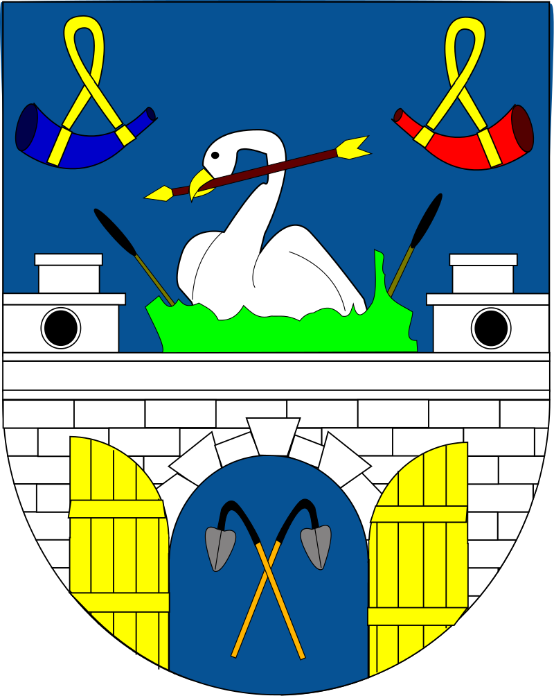
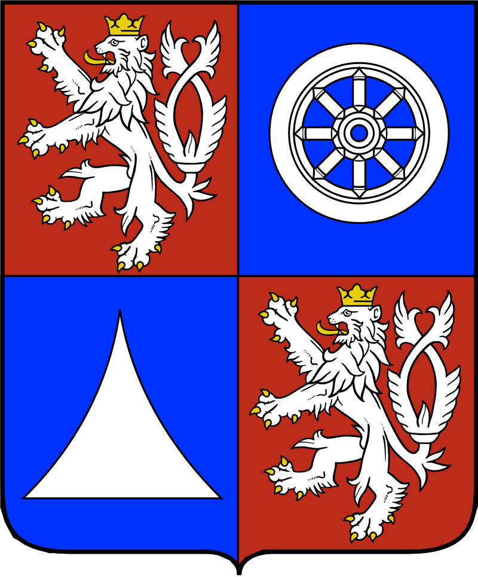
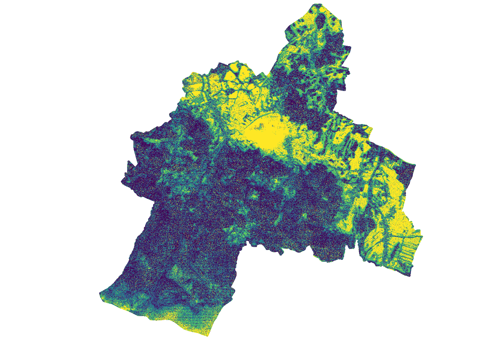

Solar Energy
Photovoltaics is a process that enables a direct conversion of light to electricity. It is one of the renewable energy resources. Because of it's specificity it can be considered a prosumer type of energy. It means the user of photovoltaic panels can be at the same time a producer, as well as, a consumer of the energy. Geographic Information Systems are often used for solar analyses, but also in order to extend and share the knowledge of solar energy through online solar cadastres. Solar cadastres are becoming more and more popular among local societies. They allow the residents and authorities to examine buildings suitable for solar energy production without specialistic tools or analyses.
This solar cadastre pilot contains many information regarding solar rooftops potential in two municipalities: Podgórzyn in Poland and Chrastava in Czech Republic. The solar attributes have been calculated in QGIS, an open GIS software. The solar attributes are: yearly mean solar irradiation, solar panels suitable area, possible energy yield for panels with various efficiency (19% and 16%), possible carbon dioxide reduction and a mean rooftop slope. The map also contains two raster layers: raster of total solar irradiation and a raster presenting the duration of direct of solar irradiation. Total solar irradiation is a sum of intensity of solar radiation which falls on specific area in kWh/m2 per year. The duration raster shows how long does the sun fall on an area directly in hours per year.



TARGET-CE
The web-based solar cadastre site has been created as a part of TARGET-CE project. It’s goal is reduction of Energy use in public buildings without significant construction works. TARGET-CE collects, adjusts, and deploy new ICT tools, financial models, action plans and training to the local and regional administrations and integrate them into territorial and thematic strategies. The project aims to become an energy efficiency flagship in central European region, offering the solutions for public buildings on a unique web platform.